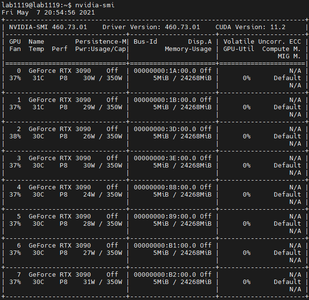
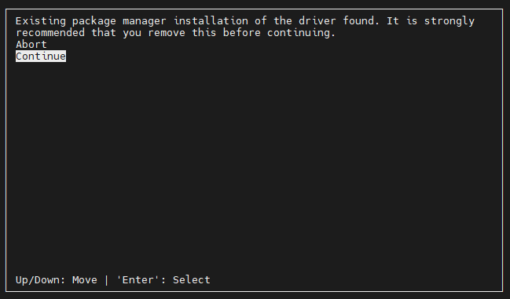
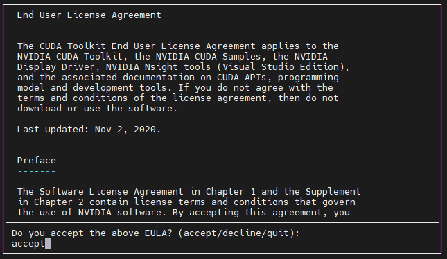
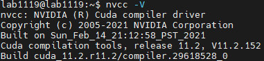

Linux
Linux
1 Linux安装
这里以Linux发行版Ubuntu 20.04.2.0 LTS为例，介绍安装过程。LTS即Long Term Support，长时间支持版本，一般是三年。Ubuntu定期并有计划的不断发布其新版本，一直坚持每6个月发布一个新的版本。并致力于在该发行版的支持期内持续的发布安全和关键补丁。Ubuntu将为每个版本提供至少18个月的支持。
1.1 下载Ubuntu安装镜像
Ubuntu 20.04 ISO文件Ubuntu官网，进入页面后点击右边的Download按钮开始下载。
1.2 制作U盘启动盘
使用容量在4GB或以上的U盘，USB3.0以上最佳，启动盘制作工具使用Rufus。
如上图所示，在Rufus中，选择我们下载好的ISO镜像文件，分区类型和安装模式选择GPT+UEFI，文件系统使用NTFS，默认簇大小即可。
点击开始，ISO写入过程大概会持续几分钟，至此，启动盘制作完成！
1.3 设置启动项
-
进入BIOS
关闭你要安装 Ubuntu 20.04 LTS的目标主机/服务器，然后插入启动盘，接着开机，在开机画面出来时使用快捷键(不同的电脑，一键进入的快捷键可能不一样，常见的快捷键为ESC，F12，F8)， -
修改启动顺序
进入BIOS后选择BOOT选项，将U盘启动盘设置优先启动项，保存并重启。
1.4 安装过程
- GNU GRUB界面
进入GRUB界面(黑色)后，我们选择ubuntu，该选项安装的Ubuntu图形界面分辨率正常。 - Try or Install
这一步可以选择安装语言，默认为English(推荐)，选择Install Ubuntu而非Try Ubuntu。 - 语言选择
默认**English(US)**即可。 - 更新选项
该界面选择**正常安装(Normal Install)**而非最小安装，其他选项中去掉勾选下载更新和第三方软件下载，由于不确定网络的稳定性，这两个选项勾选可能会严重影响安装速度。 - 安装类型
这一步选择清除整个磁盘并安装Ubuntu。 - 选择时区
选择东八区(Shanghai)。 - 创建用户名和密码
- 选择要安装的硬盘，这里系统盘为一块480G的固态硬盘。
- 等待安装完成，系统安装完毕会自动重启。
1.5 常见问题
系统安装完毕，重启后显示器黑屏
该现象是由于服务器CPU无集成显卡，需要安装GPU驱动才能驱动显示器。
具体步骤如下：
-
进入tty终端模式
由于暂时没有图形界面，我们尝试**[Ctrl]+Alt+Fn**进入tty终端(Fn通常是F1-F6). -
安装NVIDIA Driver
根据显卡型号选择对应的显卡驱动版本，对于RT3090显卡，我们选择最新的nvidia-driver-460版本。安装命令如下：sudo apt install nvidia-driver-460安装完毕后重启服务器即可。
sudo reboot重启后我们可以进入图形界面，此时在终端输入
nvidia-smi可以查看显卡状态和驱动版本。
2. 环境配置
2.1. CUDA Toolkit安装
根据显卡型号选择合适的CUDA版本，具体参考CUDA Toolkit Documentation，从CUDA Toolkit Archive进入版本选择页面，这里我们选择CUDA11.2.1。根据操作系统和架构等选择如下：
选择完毕后会获得安装包下载和安装命令
wget https://developer.download.nvidia.com/compute/cuda/11.2.1/local_installers/cuda_11.2.1_460.32.03_linux.run
sudo sh cuda_11.2.1_460.32.03_linux.run传统上，安装 NVIDIA Driver和CUDA Toolkit的步骤是分开的，但实际上我们可以直接安装 CUDA Toolkit，系统将自动安装与其版本匹配的NVIDIA Driver。NVIDIA将CUDA与NVIDIA Driver集成在一起发布了CUDA Toolkit安装包，例如这里的cuda_11.2.1_460.32.03_linux.run就是将CUDA11.2.1与nvidia-driver-460.32.03集成的安装包。
由于我们之前已经安装了NVIDIA Driver，因此在安装CUDA Toolkit时可以选择不再安装集成的NVIDIA Driver。同时我们可以注意到，在使用nvidia-smi命令时可以查看到NVIDIA Driver和CUDA版本号，此处的CUDA是驱动API(Driver Version)，是依赖NVIDIA Driver的。我们在实际运行程序时使用的是接下来要安装的CUDA Toolkit中的CUDA，即运行API(Runtime Version)。感兴趣可以自行了解，通常只需保证驱动API版本>=运行API版本即可。
下面我们讲述安装 CUDA Toolkit 的方法。
-
根据上面提示的命令，下载CUDA Toolkit安装包
wget https://developer.download.nvidia.com/compute/cuda/11.2.1/local_installers/cuda_11.2.1_460.32.03_linux.run如果下载速度过慢，可以自行粘贴网址到浏览器下载，实在不行可考虑科学上网。
-
运行安装命令
sudo sh cuda_11.2.1_460.32.03_linux.run等待一段时间后进入安装界面
这一步提示我们已经安装过NVIDIA Driver，我们选择
continue -
接受协议
输入
accept接受许可和协议。 -
集成选择界面
这一步我们去勾选NVIDIA Driver，然后执行安装即可。
-
环境变量配置
安装程序执行完毕后，屏幕上会提示设置环境变量，此处我们根据提示设置环境变量。
打开环境变量文件.bashrcsudo vim ~.bashrc在文件末尾添加如下两行(根据屏幕提示修改为你的版本)：
export PATH=$PATH:/usr/local/cuda-11.2/bin export LD_LIBRARY_PATH=$LD_LIBRARY_PATH:/usr/local/cuda-11.2/lib64执行
.bashrc文件source ~.bashrc -
测试CUDA安装
nvcc -V此时可以查看CUDA运行API版本如下：

2.2 cuDNN安装
-
官网下载安装包
在cuDNN Archive下载合适的安装包版本，例如cudnn-11.2-linux-x64-v8.1.1.33.tgz -
如果扩展名不是.tgz，则手动修改文件扩展名为.tgz
-
解压cudnn-11.2-linux-x64-v8.1.1.33.tgz
解压后得到cuda文件夹，内含include，lib64文件夹tar -zxvf cudnn-11.3-linux-x64-v8.2.0.53.tgz -
替换cuda文件
sudo cp cuda/include/cudnn.h /usr/local/cuda/include sudo cp cuda/lib64/libcudnn* /usr/local/cuda/lib64 -
更改文件权限(这里
cudnn*.h很关键，网上教程全错)sudo chmod a+r /usr/local/cuda/include/cudnn*.h sudo chmod a+r /usr/local/cuda/lib64/libcudnn* -
更新软连接
sudo ln -sf libcudnn.so.8.1.1 libcudnn.so.8 sudo ln -sf libcudnn.so.8 libcudnn.so sudo ldconfig -
查看cuDNN版本
cat /usr/local/cuda/include/cudnn_version.h | grep CUDNN_MAJOR -A 2
2.3 ssh服务配置
-
安装openssh-server
sudo apt install openssh-server -
开启ssh服务
sudo service sshd start -
查看ssh服务状态
sudo service sshd status -
安装完即可使用ssh服务工具(如mobaXterm)在局域网内使用内网IP地址和22端口访问服务器。